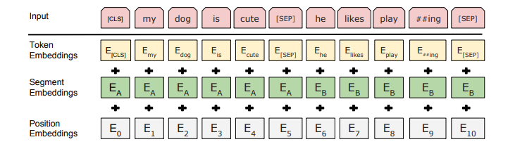

求句向量的思路探索
本文介绍一些求句向量的方法。
所谓的句向量就是在word的粒度上，求更大粒度paragraph、sentence、document的向量化表征。在很多任务中，我们最终要面对的是如何通过词向量获得句向量，或者直接构造句向量，以便下游任务直接使用，如文本分类、文本匹配或构造复杂场景如生成任务、阅读理解任务的Attention query等等。
句向量的获取方式可以分为以下几大类：
- VSM直接获得（是一个非常强的baseline）
- 基于词向量序列Pooling
- 基于词向量序列的加权平均
- 基于模型，如RNN
- 基于任务，如多任务、匹配、生成、对话
- 基于训练策略，如最大化互信息的句向量
从是否带监督数据可以分为：
- 无监督句向量（对工业界共重要）
- 有监督句向量
此外，关于句向量还要考虑如下问题：
- 不定长的词向量序列变为定长的句向量需要语义压缩，直觉上，这个过程肯定要丢失大量信息。如果剩下的都是对下游任务有用的信息，如何做？
- 句子由词组成，那么句向量如何融入位置信息？
- 在词向量的基础上，增加字符级别的信息是个很好的想法。对于英语来说，这是一个十分自然的想法，单词有词根、前缀等subword根据构词法组合而成，这些效果如何？
VSM直接获得
根据VSM直接获取文档或句子的定长向量表示，文档-单词矩阵，
称以上矩阵为文档-单词共现矩阵（document-word co-occurrence matrix）。获取权重具体方法包括one-hot、TF-IDF、TF、IDF等，此外为引入语序信息，可以引入n-grams。VSM获得的句向量是一个非常强的baseline。
那么句子$D$的每一行就是一个句子或文档的表示，通常获得特征维度非常高，特征大小等于词表大小，资源消耗大，词表大容易OOM。此时可以考虑对矩阵进行降维，如SVD分解，
矩阵$P \in R^{m \times r}$，每一行表示文档的主题分布，第$i$行表示文档$i$的向量化表征，每个表征向量的维度为$r \lt n$，从而起到降维作用。
不过共现矩阵本质是BOW模型，无法解决词序及其相关问题。
基于词向量序列Pooling
字ID序列通过神经网络Embedding模型（比如word2vec、或者模型中Embedding层的输出）后，获得词向量序列，
这里句子的长度为$n$，Pooling方法要做的事情是对不定长的词向量序列$\boldsymbol{X} = [\boldsymbol{X}_{1}, \dots, \boldsymbol{X}_{n}]$进行信息压缩，获得定长的向量，
GlobalAveragePooling1D
sentence2vec的最容易想到的方法是，基于句子中词的embedding输出的词向量序列来取简单平均，
在实践上，由于句子是不定长的，因此要注意mask掉padding的影响。
GlobalMaxPool1D
还有一种容易联想到的做法是获取词向量序列中，每个维度的最大值并组合成句向量，
GlobalMaxPool1D直观的示意图（更新）如下，

此图中，获得的句向量也就是$[e_{21}, e_{42}, e_{53}, e_{64}]$向量。可以看做是词向量序列所构成的矩阵与某个0-1矩阵的乘积，
$\boldsymbol{v}_i$是一个元素取值要么为0要么为1的向量。
更多Pooling1D
依据类似的思路，可以构造更多的Pooling，如LastPooling，即使用词向量序列的最后一个向量作为句向量，
不过这种做法要配合具体的模型使用，如RNN由于其递归计算，最后一个时间步的输出是可以作为向量。
总之，词向量序列可以通过word2vec、GloVe、FastText等模型获得，接着在向量序列中通过Pooling方法计算句向量。同时考虑，由于序列通常是不定长的，注意编程实现时的Mask处理。
基于词向量序列的加权平均
Pooling方法比较粗糙或者说暴力，无论是LastPooling、MeanPooling、MaxPooling，其中LastPooling适合RNN类模型，还是其扩展本身都没有考虑词的重要性差异。其中提到的GlobalAveragePooling1D，其实就是直接平均，它并没有考虑词的重要性。更好的方式是加权平均，
权重可以是：
- TF
- IDF
- TF-IDF
- SIF
这些权重计算方式都是从不同角度刻画词的重要性。加权平均后，句向量可能发生均值统计漂移，这时可以通过Normaliaztion修正。
IDF加权平均
IDF平均就是对于词$c_i$，富裕其词向量$\boldsymbol{X}_i$权重为该词的IDF值，
其中$\text{idf}(c_i)$为，
IDF值一般都是通过大量语料统计获得，再应用时通过查字典的方式获得给定词的IDF值。类似的还有事TF-IDF、TF作为权重。
可以从信息论角度，IDF可以作为该词的信息量的度量，
因此，IDF加权平均倾向于对不确定性更大的词富裕更大的权重。
SIF加权平均
SIF Embedding来自论文 a simple but tough-to-beat baseline for sentence embeddings，提出词向量序列的线性组合并去掉它们的第一个主成分投影来构造句向量。
SIF的权重计算如下，
$f_{i}$为item的频率，可以理解为一种smooth的期望值。更多的细节可以参考论文。
此外，Concatenated Power Mean Word Embeddings as Universal Cross-Lingual Sentence Representations通过Power Mean方法构造词向量，DisC: A Compressed Sensing View of Unsupervised Text Embeddings, Bag-of-n-Grams, and LSTMs使用压缩感知来构造句向量，压缩感知来构造句向量的思想是，保留或挖掘最有用的特征，丢弃掉无用的特征，以此构造富特征的句向量，说白了就是去伪存真，只保留词向量序列中最有用的那一部分信息。类似的方法深挖有很多。
更新：如果只是单纯地想加权平均，从数学中也可以构造很多加权平均方法，可以参考我最新的文章信息聚合漫谈：加权平均思路。
在实践中可以尝试组合多种加权平均方法获取句向量，并拼接。不过要注意，这类方法本质上还是基于BOW思想，忽略词序信息。
权重自动学习
既然是深度学习，重要的东西可以让网络模型自动学习，比如加权平均中的权重。这个想法很好，我们可以设计一个网络模型，来自动学习不同词的权重。用 $w(\boldsymbol{X}_i)$ 来表示该词向量的权重，于是有
这个权重需要考虑几点：
- 不能有负权重，因为词在句子中不应该起负作用
- 权重应该满足归一化，即权重是个概率分布
满足非负权重和归一化这两个条件，最容易让人想到的就是softmax，于是
这个$s(\boldsymbol{X}_i)$可以是简单的Dense，
把向量$\boldsymbol{X}_i$压缩为$1\times 1$的值。
在进一步，更成熟的方案是AttentionPooling1D，未归一化的权重为，
$\boldsymbol{W}, \boldsymbol{w}$都是可学习的参数。在softmax归一化后有，
因此有，
AttentionPooling1D构造句向量的直观视图，

如果把 $\boldsymbol{X} = \left [\boldsymbol{x}_{1},\boldsymbol{x}_{2},\cdots,\boldsymbol{x}_{n} \right]$ 序列打乱，在扔到这个神经网络中，得到的句向量还是一样的，这意味着AttentionPooling1D本质上还是BOW。为此，可以在Embedding上叠加位置Embedding，于是每个词向量为，
$\boldsymbol{p}_{i}$为位置$i$的位置向量。既然万物皆Embedding，那么位置也能Embedding，一种最直接的做法就是对位置编号$i$也使用Embedding，即
基于模型的句向量
基于模型的句向量，最直接是在Embedding层后加入RNN（LSTM、GRU）、CNN，但不止这些~
RNN-based
RNN天生对序列具有很好的建模能力，通常可以拿最后一个时间步的隐向量或每个时间步的隐向量序列的平均或指数衰减来作为句向量，
于是我们拿$\boldsymbol{h}_n$作为句向量的表征。为什么能行，因为RNN本质是递归计算，最后一步的输出已经包括所有历史序列的有效信息，
当$i=n$时即获得最后一步的输出。具体的RNN编码器有：
- LSTM
- GRU
- biLSTM
当然在理想情况下，最后一步的输出已经包括所有历史序列的有效信息，但是序列太长，RNN也是会遗忘的。另外，RNN的递归计算无法并行，获得的模型推理性能也会受到限制。
CNN-based
CNN易于并行能够学到n-grams信息，通过一定的技巧，如膨胀卷积学到更长距离的信息。CNN通过不断堆叠扩大感受野，结合Pooling方案，输出的序列长度变为1，改结果可以作为句向量的表征。
Skip-Thought
根据word2vec的思想，我们把word粒度提升到sentence粒度，也可以获得sentence的表示。论文Skip-Thought Vectors中提出通过当前sentence来预测上下文sentence的训练方法。假设有句子三元组$(s_{i-1}, s_{i}, s_{i+1})$，它通过$s_{i}$预测$(s_{i-1}, s_{i+1})$，即预测上一个句子和下一个句子。模型采用encoder-decoder架构，其中encoder对$s_{i}$进行编码，
获得上下文向量$\boldsymbol{c}_{i}$，然后使用两个部分参数共享的decoder分别预测$s_{i-1}$和$s_{i+1}$。基于这种思路的改进方案有很多，如使用更深的encoder-decoder架构，更好encoder如LSTM、Attention等。
Skip-Thought方案是生成模型，且编码器使用RNN，另外还涉及生成任务即encoder-decoder架构，所以训练效率慢。
Quick-Thought
Quick-Thought Vectors（来自论文An efficient framework for learning sentence representations）改进Skip-Thought Vectors训练方式，后者是生成任务，前者是分类任务，在大规模语料上训练效率大大提升。
Quick-Thought通过训练分类器来区分句子是前后句还是其他句子来进行参数学习。
InferSent
InferSent（来自论文Supervised learning of universal sentence representations from natural language inference data）训练text matching来获取句向量，模型的架构如下，
作者使用七中编码架构获取句向量，详细可参看论文。
基于预训练模型
这是BERT的模型架构Embedding部分，

模型的[CLS]的输出可以作为整个句子的向量化表征，实则上其是上一层的隐向量序列的加权平均，
类似于BERT的其他Transformer模型，从大规模语料库中预训练上下文Embedding，然后应用在下游任务中，这大概是目前的趋势。大规模语料库加持下，运用迁移学习，下游任务往往表现很好。
参考图像的方法
Embedding层输出的词向量序列$[\boldsymbol{X}_{1}, \dots, \boldsymbol{X}_{n}]$构成一个矩阵，因此可以当做图像来处理，使用如下方法获取图像哈希：
平均哈希 average hash
差分哈希 difference hash
感知哈希 perceptual hash
小波哈希 wavelet hash
该哈希值作为句向量表征。
补充（更新）
以上提及方案的部分实现见：https://github.com/allenwind/sentence-embedding
可能根据需要持续更新~
总结
以上我们谈了很多获取句向量的方法，获取方式可以分为以下几大类：
- VSM直接获得（是一个非常强的baseline）
- 基于词向量序列Pooling
- 基于词向量序列的加权平均
- 基于模型，如RNN
- 基于任务，如多任务、匹配、生成、对话
- 基于训练策略，如最大化互信息的句向量
从是否带监督数据可以分为：
- 无监督句向量（对工业界共重要）
- 有监督句向量
具体方法包括各种Pooling、各种加权平均方法以及Skip-Thoughts、Quick-Thoughts、InferSent等等。
留下几个问题：
- sentence2vec，那么sentence是否可以用矩阵表示即sentence2mat？
- 类似，词可以向量化表征，词是否也可以用矩阵表征？
- Embedding都是1D，是否可以推广，即Embedding2D
参考
[1] ELMo:Embeddings from Language Models
[2] Skip-Thought Vectors
[3] Learning General Purpose Distributed Sentence Representations via Large Scale Multi-task Learning
[4] Universal Sentence Encode
[5] Deep Averaging Network
[6] Concatenated p-mean Word Embeddings
[7] Learning Semantic Textual Similarity from Conversations
[8] Supervised Learning of Universal Sentence Representations from Natural Language Inference Data
[9] https://github.com/UKPLab/sentence-transformers
[10] https://github.com/Separius/awesome-sentence-embedding
[11] https://arxiv.org/abs/1710.06524
[12] http://www.cs.cmu.edu/~jwieting/
[13] From Word to Sense Embeddings: A Survey on Vector Representations of Meaning